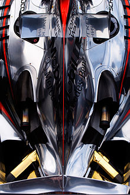
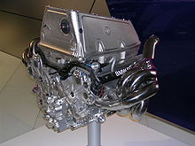

CARS AND TECHNOLOGY
Modern Formula One cars are mid-engined open cockpit, open wheel single-seaters. The chassis is made largely of carbon-fibre composites, rendering it light but extremely stiff and strong. The whole car, including engine, fluids and driver, weighs only 640 kg (1411 lbs)—the minimum weight set by the regulations. The construction of the cars is typically lighter than the minimum and so they are ballasted up to the minimum weight. The race teams take advantage of this by placing this ballast at the extreme bottom of the chassis, thereby locating the centre of gravity as low as possible in order to improve handling and weight transfer.[74]

The cornering speed of Formula One cars is largely determined by the aerodynamic downforce that they generate, which pushes the car down onto the track. This is provided by "wings" mounted at the front and rear of the vehicle, and by ground effect created by low pressure air under the flat bottom of the car. The aerodynamic design of the cars is very heavily constrained to limit performance and the current generation of cars sport a large number of small winglets, "barge boards", and turning vanes designed to closely control the flow of the air over, under, and around the car.
The other major factor controlling the cornering speed of the cars is the design of the tyres. From 1998 to 2008, the tyres in Formula One were not "slicks" (tyres with no tread pattern) as in most other circuit racing series. Instead, each tyre had four large circumferential grooves on its surface designed to limit the cornering speed of the cars.[75] Slick tyres returned to Formula One in the 2009 season. Suspension is double wishbone or multilink front and rear, with pushrod operated springs and dampers on the chassis - one exception being that of the 2009 specification Red Bull Racing car (RB5) which used pullrod suspension at the rear, the first car to do so since the Minardi PS01 in 2001. Ferrari used a pullrod suspension at both the front and rear in their 2012 car.[76] Both Ferrari (F138) and McLaren (MP4-28) of the 2013 season used a pullrod suspension at both the front and the rear.
Carbon-carbon disc brakes are used for reduced weight and increased frictional performance. These provide a very high level of braking performance and are usually the element which provokes the greatest reaction from drivers new to the formula.

A BMW Sauber P86 V8 engine, which powered their 2006 F1.06.
Engines must be no more than 2.4-litre naturally aspirated V8s, with many other constraints on their design and the materials that may be used. For the 2014 Formula 1 season, engine changes have been approved which will see the replacement of the 2.4-litre naturally aspirated V8 engines to a turbocharged 1.6 litre V6 unit.[77] Engines run on unleaded fuel closely resembling publicly available petrol.[78] The oil which lubricates and protects the engine from overheating is very similar in viscosity to water. The 2006 generation of engines spun up to 20,000 RPM and produced up to 780 bhp (580 kW).[79] For 2007 engines were restricted to 19,000 rpm with limited development areas allowed, following the engine specification freeze from the end of 2006.[80] For the 2009 Formula One season the engines were further restricted to 18,000 rpm.[81]
A wide variety of technologies—including active suspension, ground effect, and turbochargers—are banned under the current regulations. Despite this the current generation of cars can reach speeds up to 350 km/h (220 mph) at some circuits.[82] The highest straight line speed recorded during a Grand Prix was 369.9 km/h (229.8 mph), set by Antônio Pizzonia during the 2004 Italian Grand Prix.[83] A Honda Formula One car, running with minimum downforce on a runway in the Mojave desert achieved a top speed of 415 km/h (258 mph) in 2006. According to Honda, the car fully met the FIA Formula One regulations.[84] Even with the limitations on aerodynamics, at 160 km/h (99 mph) aerodynamically generated downforce is equal to the weight of the car, and the oft-repeated claim that Formula One cars create enough downforce to "drive on the ceiling", while possible in principle, has never been put to the test. Downforce of 2.5 times the car's weight can be achieved at full speed. The downforce means that the cars can achieve a lateral force with a magnitude of up to 3.5 times that of the force of gravity (3.5g) in cornering.[85] Consequently, the driver's head is pulled sideways with a force equivalent to the weight of 20 kg in corners. Such high lateral forces are enough to make breathing difficult and the drivers need supreme concentration and fitness to maintain their focus for the one to two hours that it takes to complete the race. A high-performance road car like the Ferrari Enzo only achieves around 1g. [86]
As of 2010 each team may have no more than two cars available for use at any time. Each driver can use no more than eight engines during a season; if more are used, he drops ten places on the starting grid of the event at which an additional engine is used. Each driver may use no more than one gearbox for five consecutive events; every unscheduled gearbox change requires the driver to drop five places on the grid unless he failed to finish the previous race due to reasons beyond the team's control.[87]
SOURCE:
BACK